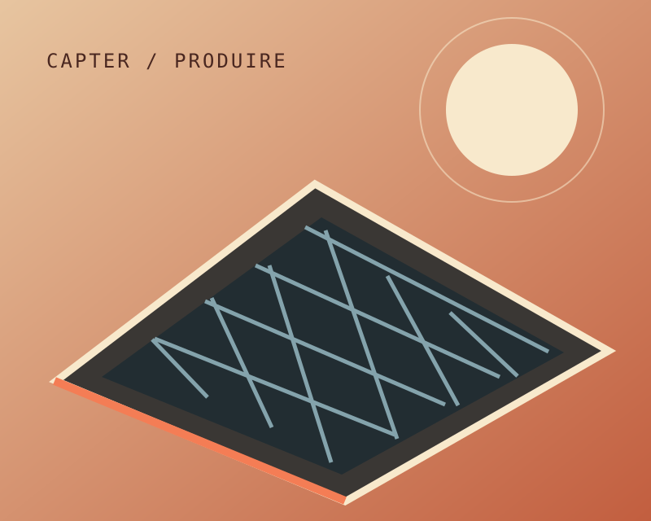

Évaluer votre consommation
Définir les objectifs du projet et examiner le bâtiment qui accueillera l’installation.
Une installation solaire performante commence par une étude attentive du bâtiment, de vos usages et des équipements nécessaires.
Étudier mon besoinUn projet photovoltaïque mérite une réflexion concrète sur les surfaces disponibles, l’exposition, la consommation d’électricité et les objectifs recherchés. La pose de panneaux ne se limite pas à un choix de modules : elle comprend un diagnostic préalable et une organisation rigoureuse des composants.
Omnichauff accompagne les projets photovoltaïques sur le secteur de Valenciennes. L’entreprise présente également des compétences dans le solaire thermique. Notre intervention vise à faire correspondre les équipements installés avec le fonctionnement du bâtiment.
Une approche progressive et des explications claires pour préparer chaque intervention.
Définir les objectifs du projet et examiner le bâtiment qui accueillera l’installation.
Identifier les équipements concernés : panneaux, onduleur et autres composants selon le besoin.
Réaliser la pose et procéder aux contrôles nécessaires avant l’utilisation.


Panneaux, convertisseur, onduleur et éventuellement batterie constituent des éléments d’un ensemble. La pertinence de chacun dépend du projet et des usages envisagés. Omnichauff propose une analyse technique pour orienter ce choix.
Vous souhaitez améliorer votre autonomie énergétique ou étudier une installation sur un bâtiment d’activité ? Exposez vos besoins à l’équipe. Elle pourra vous indiquer les points à examiner avant d’engager une réalisation.
Quelques réponses pour préparer votre échange avec l’équipe Omnichauff. Pour un cas particulier, une prise de contact reste nécessaire.
Oui, l’autoconsommation est citée parmi les objectifs envisagés lors de l’analyse initiale du projet solaire.
Oui. Omnichauff mentionne des projets photovoltaïques destinés aux particuliers comme aux entreprises.
Non. Selon le besoin, les équipements du système peuvent comprendre notamment onduleurs, convertisseurs et batteries.
Omnichauff est implantée au 521 Rue de la Broderie, 59235 Bersée. L’entreprise intervient notamment dans le secteur de Valenciennes et autour de Douai. Contactez l’équipe pour étudier la faisabilité de votre projet selon votre localisation.
Contacter Omnichauff ↗Parlons de votre installation et trouvons la bonne suite à donner à votre demande.